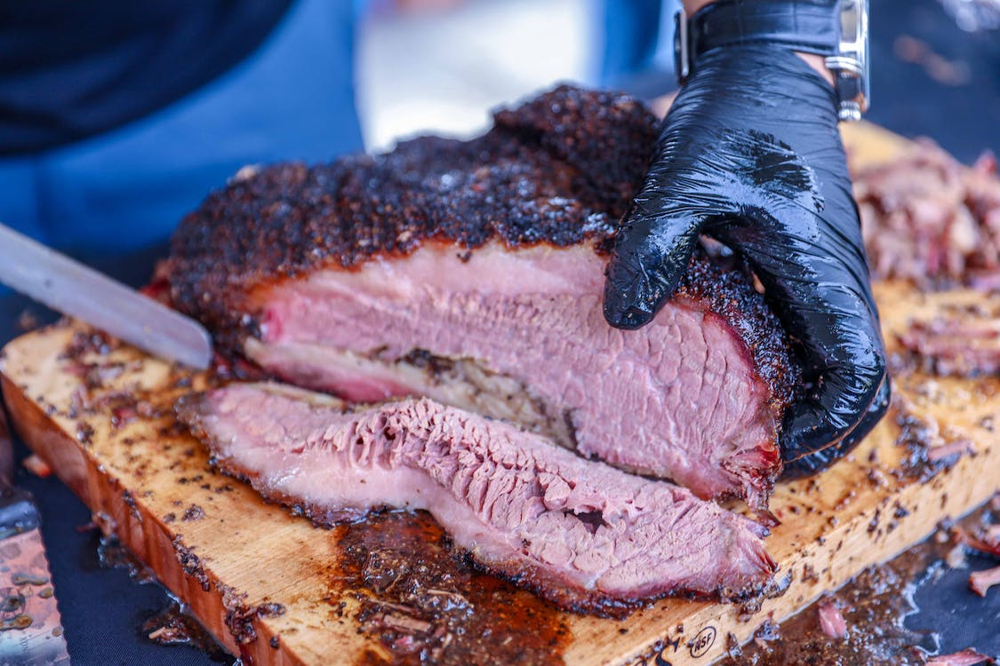

Brisket

Pellet Grill Smoked Brisket
This brisket is smoked on a pellet grill to
make the smoking process easy. all you need
is a prime brisket and some simple seasonings.
Ingredients
- Slab of prime brisket
- Salt
- Pepper
- Sugar (optional)
Steps
- Cover brisket in salt and sprinkle on pepper
- cover gril with tinfoil
- place brisket on center of grill and cook at 225
until an internal temp of 120F
- Once brisket is at 120F, wrap tinfoil around the
brisket and continue cooking at 350F until an internal
temp of 160F